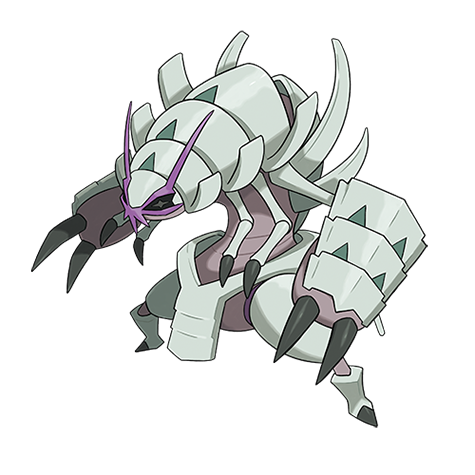

Ivo Palakiko
Personality: Ivo is known in his hometown for being extremely reckless, crazy, defiant, and a loud talker. However, what most people don’t know about him is that he can be extremely cunning during battle, able to use both his Burst and his Support Pokemon’s abilities to their fullest effect. Due to his background of being somewhat of a bully and getting into fights a lot, Ivo still has violent tendencies but now uses them for the greater good. He takes inspiration from a few different people, namely, Lance and Guzma. He admires their determination to accomplish what they want, to not just survive, but also thrive with all the odds stacked against them. He also admires their quality of being willing to sacrifice anything in order to accomplish their goal, even if it may be looked down on by others.
Age: 15
Gender: Male
Eye Color: Brown
Hair Color: Gray
Skin Color: Tan
Hometown: Akala Island
Home Region: Alola
Trivia:
Ivo’s favorite foods are bitter malasadas. However, he also really likes spicy food.
Ivo is actually a very good artist and has drawn many portraits and pictures that his family keeps in their house. Some of them are even framed.
Ivo is more of a big city person and thus extremely likes going to places such as Hau’oli City.
Ivo was a little bit of a bully growing up (making him a perfect candidate for Team Skull). He got into a lot of fights.
Ivo knows how to swim very well, and is the best in his family.
Once Ivo gained the Burst ability, he started to dislike using his partner pokemon Goliath in battle, and would rather fuse with it and fight directly. This makes him the most frequent user of his Burst form on the team. Whenever he does use Goliath in battle, he always makes sure that it doesn’t faint.
Pokémon:

Golisopod♂
“Goliath”
Bug/Water
Ability: Emergency Exit
Goliath can return to his Poké Ball at will, as well as send out another Pokémon to take his place.
Personality: Goliath is tentative and strategic when it comes to resolving battles. However, he is also stubborn about keeping appearances. He hates to be seen as weak and often insists his previous evolution as a Wimpod has no effect on his current self. As such, Goliath is competitive and eager to always be right. However, it is undeniable that fear is engineered in his genes, as Goliath will inevitably feel the need to flee when things look even just a little bleak. He justifies this to himself by believing it was a “tactical retreat”.
MOVES:
First Impression (Bug)
When the battle begins, Goliath quickly dashes right in front of the opponent so fast he seems to disappear for a second. He then strikes the opponent with one of his claws.
Liquidation (Water)
Goliath’s body briefly becomes surrounded by blue energy. When the blue glow fades, his body becomes surrounded by water and he shoots itself like a rocket at the opponent, slamming into them.
Sucker Punch (Dark)
Goliath runs around the opponent at a high speed, before suddenly punching them.
X-Scissor (Bug)
Goliath’s claws glow light green, and he swipes them in an 'X' formation, creating a light green 'X' in front of him and tackling the opponent with the 'X' in front of him or firing an 'X' shaped light green energy at the opponent.
BURST
As a user of Burst, Ivo can use many of the abilities of the Pokémon he combines with Goliath, his Golisopod. This fusion gives Ivo extra armor, super strength, powerful slashing claws, 2 extra pairs of arms, and control over pressurized water that comes out of his body.
TECHNIQUES:
Ivo raises all of his six arms and makes a sort of asterisk with them (similar to X-Scissor), he then slashes at the opponent with all of his arms, which knocks back the opponent and has a high critical hit chance.
Ivo surrounds his entire body in an orb of water and lunges at the opponent at blinding speed before they are able to move.
Ivo uses his 4 smaller arms to launch gusts of water which quickly propel him backward. This is seen as a more defensive move of Ivo’s, however, he is able to use this while facing backward to ram into the opponent.
A black aura begins to surround Ivo. This aura then concentrates in his claws, changing from black to a dark blue. His claws grow slightly larger. Ivo then launches towards the enemy and with each hand either grabs, slashes, or punches his opponent and blasts water each time he attacks.
Brutal Douse: Assault Throw
This move only works with a wall. Ivo uses his Brutal Douse and launches himself at the opponent. He uses one of his larger hands to grab and throw the opponent at the wall, then, when they bounce back to him, he punches them with three of his hands on one side (1 big, 2 small). He keeps his last two attacks of Brutal Douse after using this move.
Brutal Douse: Assault Pummel
Ivo uses his Brutal Douse and grabs the opponent. He throws and pins them to the ground, then proceeds to pummel them with the rest of his attacks in no particular order. This also causes the opponent to be confused after the attack as they have been doused with water in the same spot 6 times in less than a minute. Ivo uses this to his advantage incredibly often.